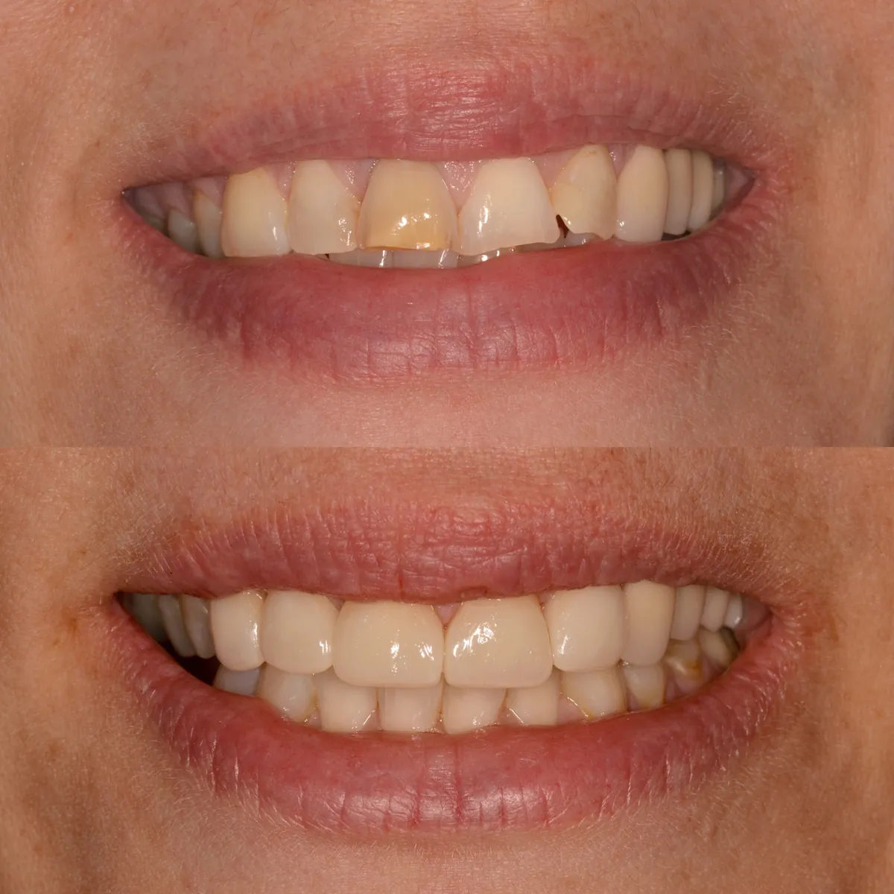
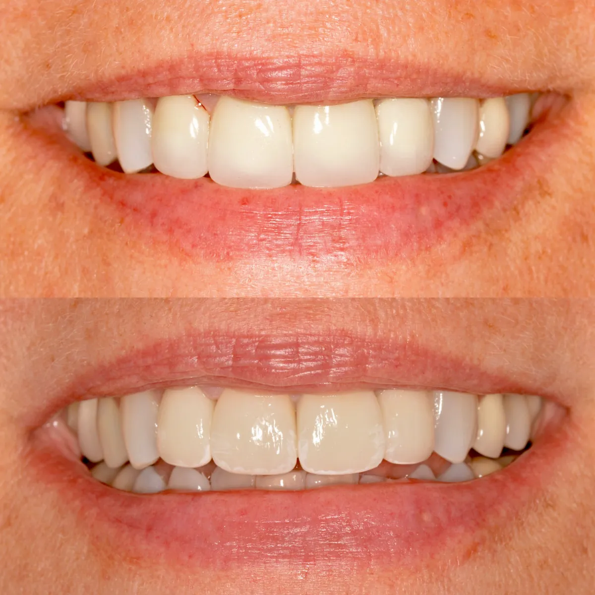

CEREC Same-Day Crowns
3D photography and CAD/CAM technology that lets Dr. Tichy design, mill, and place a crown, bridge, inlay, onlay, or veneer in a single visit.
Saving time with CEREC — a 3D photography and CAD/CAM system that allows a dentist to create same-day, single-visit crowns, bridges, inlays, onlays, veneers and more.
Why we chose CEREC for our patients
Traditional crowns are made in dental laboratories, which requires multiple visits, uncomfortable impressions, numerous injections, a temporary crown, and — most importantly — time away from family and work.
The biggest advantage of CEREC is saving time. Many of our patients have busy daily schedules, and finding time for a dental visit can be a challenge. In most cases we can cut the number of visits to just one. This leading-edge technology creates high-quality, metal-free crowns right in our office. The advanced CAD/CAM system restores damaged teeth using ceramic blocks, making your new teeth stronger while keeping their natural look.
When we use CEREC
- Crowns — posterior and anterior
- Bridges
- Onlays and inlays
- Veneers
- Clear aligner scans (3M Clarity Aligners)
- Nightguard scans
How does CEREC work?
First, just like with traditional crowns, Dr. Tichy prepares the tooth for a crown. Next, we take a digital impression to create an image of your tooth and its surrounding area, and send it to the CEREC computer where your new tooth is designed. Dr. Tichy navigates this 3D system to create a perfect replacement. You're welcome to watch as our computer-operated milling machine carves your new restoration from a single ceramic block in a matter of minutes. After milling, we polish and stain the tooth to match the color of your other teeth.
Fun fact: the tooth is purple at this stage, because the high-quality ceramic block is purple. Now it's time for baking — the purple tooth is placed in a high-temperature oven for 15 minutes, and comes out nice and white. The last step is bonding the finished crown to your tooth. And you're done!
Dr. Tichy and his team always take time to walk you through the procedure beforehand and answer any questions you may have. Please call us at 503-635-3588 for your new patient exam.


Learn more about the CEREC system in this Journal of the American Dental Association article.
Request your appointment online
Request a visit, register as a new patient, and sign consent forms — all through our secure patient portal, on your schedule. Our front desk will follow up to confirm your appointment time.